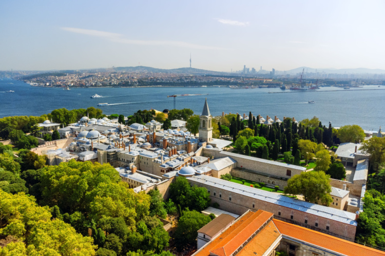
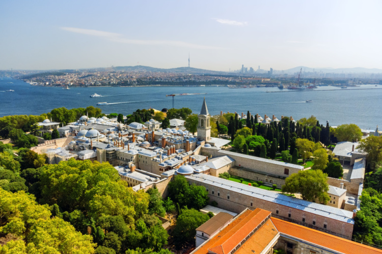

Topkapı Sarayı
Topkapı Sarayı (Osmanlı Türkçesi: طوپقپو سرايى), İstanbul Sarayburnu'nda, Osmanlı İmparatorluğu'nun 600 yıllık tarihinin 400 yılı boyunca, devletin idare merkezi olarak kullanılan ve Osmanlı padişahlarının yaşadığı saraydır.[1] Bir zamanlar içinde 4.000'e yakın insan yaşamıştır.[2] Topkapı Sarayı Fatih Sultan Mehmed tarafından 1478’de yaptırılmış, Abdülmecid’in Dolmabahçe Sarayı’nı yaptırmasına kadar yaklaşık 380 sene boyunca devletin idare merkezi ve Osmanlı padişahlarının resmi ikâmetgâhı olmuştur. Kuruluş yıllarında yaklaşık 700.000 m²'lik bir alanda yer alan sarayın bugünkü alanı 80.000 m²'dir.[3] Topkapı Sarayı, saray halkının Dolmabahçe Sarayı, Yıldız Sarayı ve diğer saraylarda yaşamaya başlaması ile birlikte boşaltılmıştır. Padişahlar tarafından terk edildikten sonra da içinde birçok görevlinin yaşadığı Topkapı Sarayı hiçbir zaman önemini kaybetmemiştir. Saray zaman zaman onarılmıştır. Ramazan ayı içerisinde padişah ve ailesi tarafından ziyaret edilen Kutsal Emanetler'in bulunduğu Hırka-i Saadet Dairesi’nin her yıl bakımının yapılmasına ayrı bir önem verilmiştir.[3] Fatih Sultan Mehmed 1465 yılında Topkapı Sarayı'nın inşaatını başlatmıştır Topkapı Sarayı’nın ilk defa, adeta bir müze gibi ziyarete açılması Abdülmecid dönemine rastlamıştır. O dönemin İngiliz elçisine Topkapı Sarayı Hazinesi’ndeki eşyalar gösterilmiştir. Bundan sonra Topkapı Sarayı Hazinesi’ndeki eski eserleri yabancılara göstermek gelenek haline gelir ve Abdülaziz zamanında, ampir üslupta camekanlı vitrinler yaptırılır, hazinedeki eski eserler bu vitrinler içinde yabancılara gösterilmeye başlanır. II. Abdülhamid tahttan indirildiği sıralarda Topkapı Sarayı Hazine-i Hümâyûn’un pazar ve salı günleri olmak üzere halkın ziyaretine açılması düşünülmüşse de bu gerçekleşememiştir. Mustafa Kemal Atatürk’ün emriyle 3 Nisan 1924 tarihinde halkın ziyaretine açılmak üzere İstanbul Âsâr-ı Atika Müzeleri Müdürlüğü’ne bağlanan Topkapı Sarayı önce Hazine Kethüdalığı, sonra Hazine Müdüriyeti adıyla hizmet vermeye başlamıştır. Bugün ise Topkapı Sarayı Müzesi Müdürlüğü adıyla hizmet vermeye devam etmektedir. 1924 yılında bazı ufak onarımlar yapıldıktan ve ziyaretçilerin gezebilmeleri için gereken idari önlemler de alındıktan sonra Topkapı Sarayı 9 Ekim 1924 tarihinde müze olarak ziyarete açılmıştır. O tarihte ziyarete açılan bölümler Kubbealtı, Arz Odası, Mecidiye Köşkü, Hekimbaşı Odası, Mustafa Paşa Köşkü ve Bağdat Köşkü’dür.[3] Günümüzde büyük turist kitlelerini kendine çeken saray 1985 yılında UNESCO Dünya Mirasları Listesi'ne giren İstanbul Tarihî yarımada içerisindeki tarihî eserlerin en başında gelmektedir.[4] Günümüzde müze olarak hizmet vermektedir.[5] 2024 yılı boyunca müzeyi toplam 4 milyon 683 bin 250 kişi ziyaret etmiştir.[6]

Ayasofya
Ayasofya (anlamı: Kutsal Bilgelik), resmî adıyla Ayasofya-i Kebîr Câmi-i Şerîfi, İstanbul'da kiliseden camiye çevrilmiş önemli bir tarihî yapıdır. Bizans İmparatoru I. Justinianus tarafından, 532-537 yılları arasında İstanbul'un tarihî yarımadasındaki eski şehir merkezine inşa ettirilmiş bazilika planlı bir patrik katedrali olmuştur. 1453 yılında İstanbul'un Osmanlılar tarafından fethedilmesinden sonra II. Mehmed tarafından camiye dönüştürülmüştür. Mustafa Kemal Atatürk tarafından 1934 yılında yayımlanan kararname ile tadilat çalışmasına alınmış, 1935 yılında Bakanlar Kurulu kararı ile müzeye dönüştürülme kararı alınıp müzeye dönüştürülmüş, kazı ve tadilat çalışmaları başlatılmış ve 1935'ten 2020'ye kadar müze olarak hizmet vermiştir. 2020 yılında ise tekrar camiye çevrilmiştir. 2024 yılında caminin üst katı ücretli bir müze olarak hizmet vermeye başlamıştır. Böylelikle Ayasofya'nın alt katı cami, üst katı müze olmuştur.[5] Ayasofya, mimari bakımdan merkezî planı birleştiren kubbeli bazilika tipinde bir yapı olup kubbe geçişi ve taşıyıcı sistem özellikleriyle mimarlık tarihinde önemli bir dönüm noktası olarak ele alınır. Hristiyanlar için hem sembolik hem de eksen olma anlamının yanında, turistik ve ruhsal bir çekim merkezidir. Ayasofya adındaki "Aya" sözcüğü "kutsal" anlamına gelir. "Sofya" sözcüğü ise Grekçede "bilgelik" anlamındaki sophos sözcüğünden gelir.[6] Dolayısıyla "Aya Sofya" adı, Nasıralı İsa'ya atfen "Kutsal Bilgelik" ya da "İlahî Bilgelik" anlamına gelmekte olup Hristiyan ilahiyatında Tanrı'nın üç niteliğinden biri sayılır.[7][8] Miletli İsidoros ve Trallesli Antemius'un[4][9] yönettiği Ayasofya'nın inşaatında yaklaşık 10.000 işçinin[10][11][12] çalıştığı ve İmparator I. Justinianus'un bu iş için büyük bir servet harcadığı belirtilir.[13] Bu çok eski binanın bir özelliği; yapımında kullanılan bazı sütun, kapı ve taşların binadan daha eski yapı ve tapınaklardan getirilmiş olmasıdır.[14][15] Bizans İmparatorluğu döneminde Ayasofya, büyük bir "kutsal emanetler" zenginliğine sahipti. Bu emanetlerden biri de 15 metre yüksekliğindeki gümüş ikonostasis idi.[16] Konstantinopolis Patriği'nin kilisesi ve Doğu Ortodoks Kilisesi'nin 1000 yıl boyunca merkezi olan Ayasofya, 1054 yılında Patrik I. Mihail'in Papa IX. Leo tarafından aforoz edilmesine şahitlik etmiş olup bu olay, genel olarak "Schisma"nın yani Hristiyanlık tarihindeki en önemli olaylardan biri olan Doğu ve Batı kiliselerinin ayrılmasının başlangıcı sayılır. 1453 yılında kilise, Osmanlı padişahı II. Mehmed tarafından camiye dönüştürüldükten sonra mozaiklerinden insan figürleri içerenler tahrip edilmemiş (içermeyenlerse olduğu gibi bırakılmıştır), yalnızca ince bir sıvayla kaplanmış ve yüzyıllarca sıva altında kalan mozaikler, bu sayede doğal ve yapay tahribattan kurtulabilmiştir. Cami, müzeye dönüştürülürken sıvaların bir kısmı çıkarılmış ve mozaikler yine gün ışığına çıkarılmıştır. Günümüzde görülen Ayasofya binası, aslında aynı yere üçüncü kez inşa edilen kilise olduğundan "Üçüncü Ayasofya" olarak da bilinir. İlk iki kilise isyanlar sırasında yıkılmıştır. Döneminin en geniş kubbesi olan Ayasofya'nın merkezî kubbesi, Bizans döneminde bir kez (7 Mayıs 558 tarihinde) çökmüş,[17][18] Osmanlı başmimarı Mimar Sinan'ın binaya payandaları eklemesinden itibaren de hiç çökmemiştir.


Kız kulesi
Kyzikos'taki deniz zaferinden sonra, MÖ 408'de Atinalı general Alkibiadis, muhtemelen Karadeniz'den gelen gemiler için Üsküdar'ın önündeki küçük bir kaya üzerine özel bir istasyon inşa etti.[2] Üsküdar'ın sembolü hâline gelen kule, Üsküdar’da Bizans devrinden kalan tek eserdir. MÖ 24 yıllarına kadar uzanan bir geçmişe sahiptir. 1110'da Bizans İmparatoru I. Aleksios, taş duvarla korunan ahşap bir kule inşa etti.[2] Kuleden Konstantinopolis'teki Mangana semtinde (tarihî yarımadada bir mahalle) dikilmiş başka bir kuleye uzanan bir demir zincir gerildi.[2] Adacık daha sonra su altı kalıntıları hâlâ görülebilen bir savunma duvarı ile Asya kıyısına bağlandı.[2] 1453'te İstanbul'un Osmanlılar tarafından fethi sırasında, kulede Venedikli Gabriele Trevisano tarafından yönetilen bir Bizans garnizonu bulunuyordu.[2] Daha sonra yapı, Fatih Sultan Mehmed döneminde Osmanlı Türkleri tarafından gözetleme kulesi olarak kullanılmıştır.[2] İlk olarak Yunan döneminde bir mezara ev sahipliği yapan bu ada, Bizans döneminde inşa edilen ek bina ile gümrük istasyonu olarak kullanılmıştır. Osmanlı döneminde ise gösteri platformundan savunma kalesine, sürgün istasyonundan karantina odasına kadar birçok işlev yüklenmiştir. Asli görevi olan ve yüzyıllardan beri varlığı ile insanlara, geceleri ise geçen gemilere göz kırpan feneri ile yol gösterme işlevini hiç kaybetmemiştir. Bazı Avrupalı tarihçiler buraya Leander Kulesi derler. Kule hakkında pek çok rivayet bulunmaktadır. Antik Çağ'da arkla (küçük kale) ve damialis (dana yavrusu) adları ile anılan kule, bir ara da "Tour de Leandros" (Leandros'un Kulesi) ismi ile ünlenmiştir. Şimdi ise Kız Kulesi ismi ile bütünleşmiştir ve bu ismi ile anılmaktadır. Çok eski geçmişi olan Kız Kulesi, bir zamanlar Boğaz'dan geçen gemilerden vergi alınmak maksadı ile kullanılmıştır. Kule ile Avrupa yakası boyunca büyük bir zincir çekilmiş ve gemilerin Anadolu yakası ile Kız Kulesi arasından geçişine (O zamanlar gemi boyutları küçük olduğu için geçebilmekteydi.) izin verilmiştir. Bir süre sonra kule, zinciri taşıyamamış ve Avrupa yakasına doğru yıkılmıştır. Kuleden suyun içine bakıldığında yıkıntıları görülmektedir.